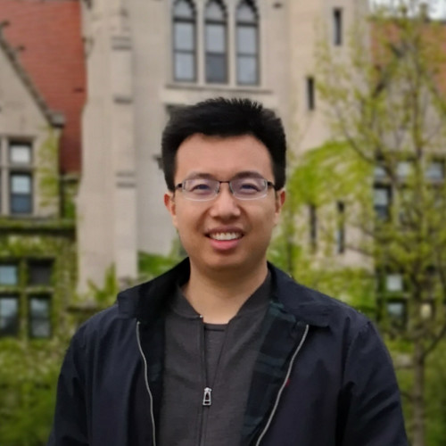
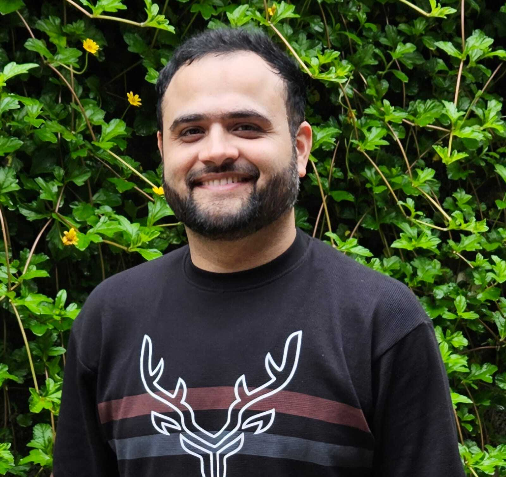
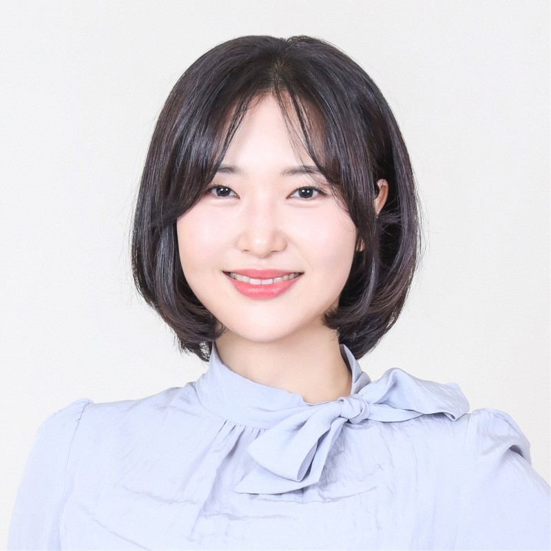

Curation as a modeling decision
Selection, filtering, mixing, and weighting across stages. Trade-offs against architecture and compute, and realistic reporting standards.
From hidden data decisions to transparent, reproducible foundation-model development across modalities.
CRAFT examines the lifecycle of data used to train foundation models, from acquisition and curation to analysis and provenance tracking.
Successful model training depends not only on model architecture but also on how training data are selected and curated. These decisions are often iterative and rarely documented in full.
The workshop provides a forum for examining data recipes and identifying best practices for their design, evaluation, and documentation across languages and modalities.
What curation actually happens inside the labs building these models, and why is so little said out loud?
Each theme pairs a data decision with an open question the community can study.
Selection, filtering, mixing, and weighting across stages. Trade-offs against architecture and compute, and realistic reporting standards.
Cleaning, near- and cross-modal duplicate detection, benchmark leakage, and contamination detection when the corpus is private.
Language and dialect coverage, web-corpus audits, consent and licensing metadata, non-English defaults, and community-run audits.
Sourcing, filtering, weighting, and pruning trajectories, tool-use logs, and reasoning traces. Testbeds for comparing selection strategies.
Blend ratios, keep/discard criteria, and collapse diagnostics that do not require access to the generator.
We invite papers, experience reports, and artifacts on the data decisions that shape foundation models, from acquisition and curation to analysis and provenance.
Research and practical experience across the full training-data lifecycle, including work that can be studied without proprietary corpora.
| Submission | Route & format | Publication |
|---|---|---|
| 01Long papersUp to 8 content pages | Direct submission or ARR commitment Official ACL template ↗ | Archival Original, unpublished work. Accepted archival papers appear in the ACL Anthology. |
| 02Short papersUp to 4 content pages | Direct submission or ARR commitment Official ACL template ↗ | Archival Original, unpublished work. Accepted archival papers appear in the ACL Anthology. |
| 03Presentation-only workUp to 2 content pages | Extended abstract of published work or work in progress Declare publication and review status | Non-archival Share work with the community without republishing it in the proceedings. |
Limits apply to the main content, including figures and tables. References, appendices, and end-of-paper Limitations and Ethical Considerations sections do not count. Papers must be self-contained; reviewers are not required to read supplementary material. Accepted archival papers receive one additional content page for the final version (9 pages for long papers, 5 for short papers).
CRAFT will accept direct submissions and papers with existing ARR reviews. The submission link will be posted here.
Direct papers receive double-blind review from at least three reviewers. ARR commitments retain their ARR reviews and receive a separate fit and ethics check. Conflicts of interest and organizer recusal will be enforced.
All accepted papers receive poster presentations. Selected papers will be invited for oral presentations.
From the first submission to the workshop conversation.
Dates follow ACL’s tentative COLING 2027 workshop timeline. ARR commitments and CRAFT’s exact workshop day are TBA.
Conference dates. CRAFT’s exact workshop day will be announced.
Workshop call for papers.
Reminder and submission information.
Direct submissions through OpenReview.
Commit papers with existing ARR reviews.
Decisions and presentation information.
COLING 2027 · Macau, China. Exact CRAFT workshop day TBA.
The detailed program will be announced closer to the workshop.
Research alongside perspectives from the labs building foundation models.
A forum to share methods, artifacts, and experience across languages and modalities.
What can be shared, what should be documented, and what the community can study.
Invited speakers and talk details will be announced here.
A collaboration across industry and academia.
 in ↗
in ↗Oracle AI
 in ↗
in ↗Oracle AI

in ↗Georgia Institute of Technology
 in ↗
in ↗Microsoft
 in ↗
in ↗Meta FAIR

in ↗Oracle AI

in ↗AIM Intelligence
Oracle AI
Reviewers bringing expertise across the training-data lifecycle.
Oracle AI
Oracle AI
Oracle AI
Oracle AI
TD Securities
Apple
T-Mobile
Oracle AI
Nutanix
Vrije Universiteit Amsterdam
University of Zurich
Oracle AI
Carnegie Mellon University
Interested in reviewing for CRAFT 2027? We welcome researchers from academia and industry, including graduate researchers with relevant experience. Tell us about your research interests and preferred reviewing load through our signup form.
Help make CRAFT accessible to the researchers and communities shaping the future of training data.
We welcome support for student participation, registration, travel, and accessibility.
Discuss sponsorship ↗